An application to NHANES
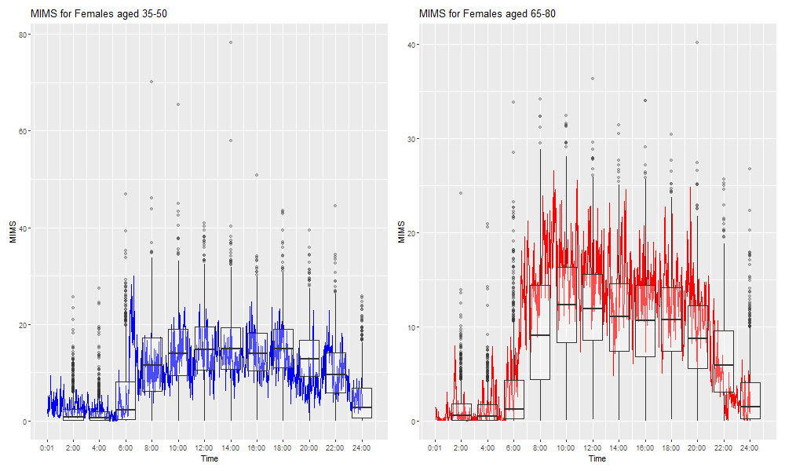
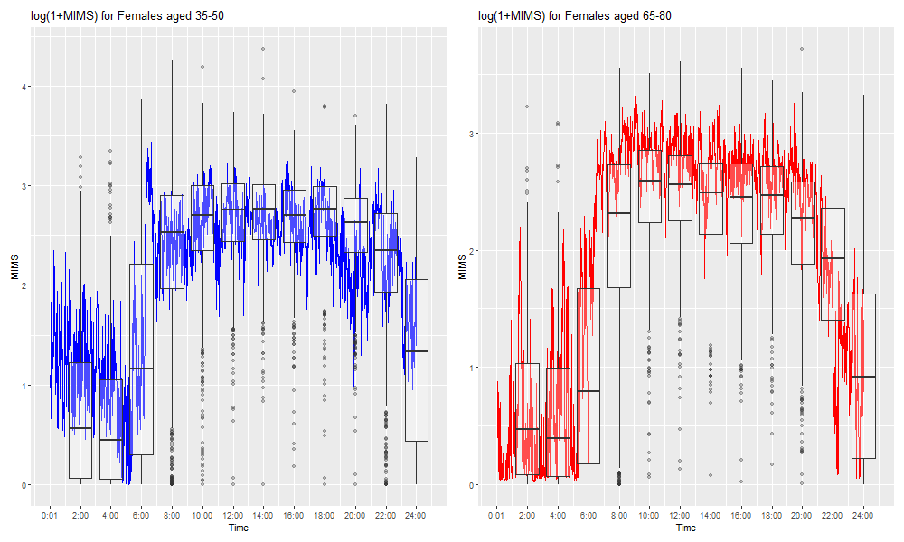
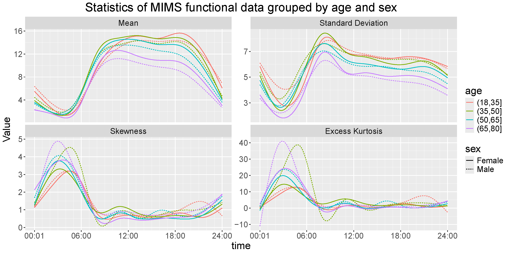
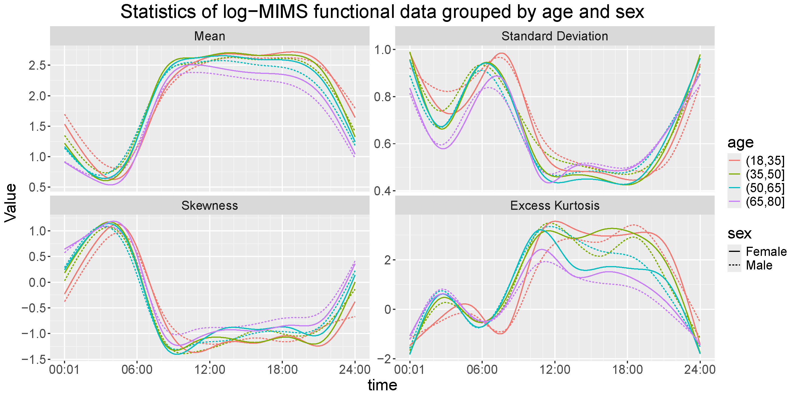
In typical functional regression tasks, the mean relationship between the outcome, \(Y(s)\), and covariate vector \(X\) are modeled under GP assumption
\[ Y_i(s)=\mu_i(s;X)+\epsilon_i(s)~,\epsilon_i(s) \sim \mathcal{GP}(0, V(\cdot,\cdot)) \] \(V\) is the covariance operator, and does NOT depend on \(X\).
We approach this using mixed-effect modeling with splines: \[ \small \begin{aligned} Y_i(s)&=\overset{\text{(Fixed Effect)}}{\mu_i(s)}&+&\overset{\text{(Random Effect)}}{b_i(s)}&+&\overset{\text{(Residual Noise)}}{\epsilon_i(s)}\\ Y_i(s)&=\sum\limits_{p=1}^PX_{ip}A_p(s)&+&\sum\limits_{j=1}^J\xi_{ij}\phi_j(s)&+&~~~~~~\epsilon_i(s) \end{aligned} \]
\(~~~\small Y_i(s)=X_i\cdot\)
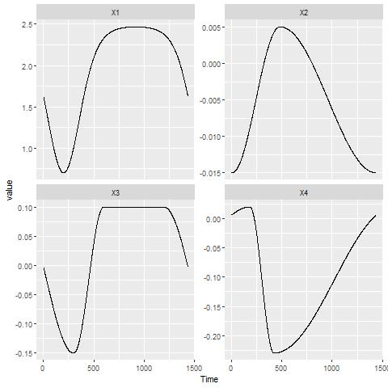
+ \(~~~\small \xi_i\cdot\)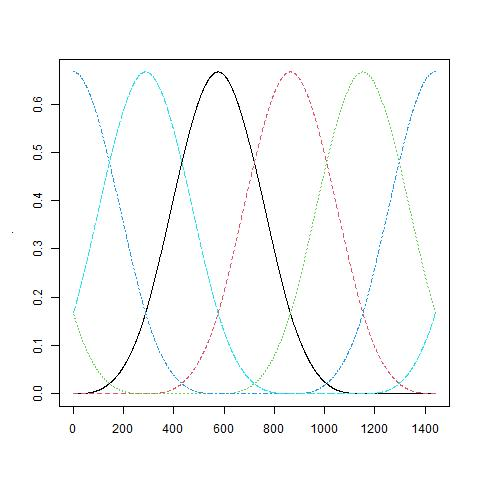
+ \(~~~\)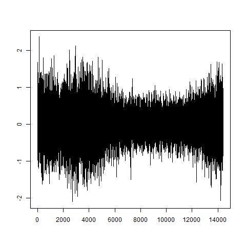
We can regress our data on any spline basis and look at the spline coefficients; Non-ellipsoid shape means violation of GP
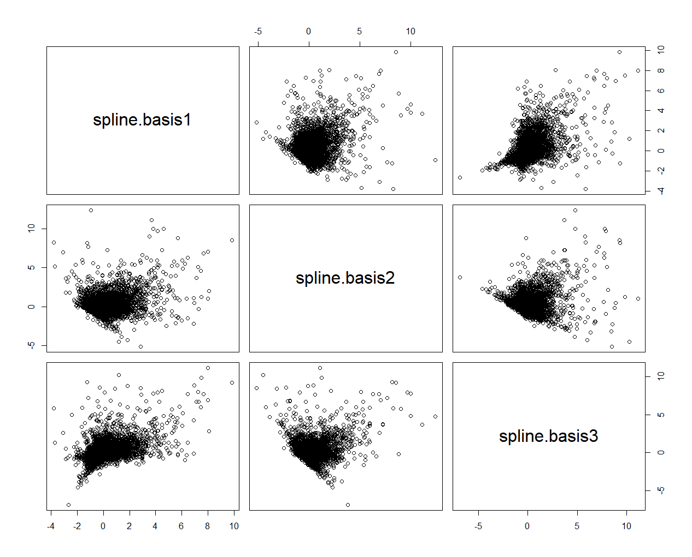
We can then apply simpler tests for normality (e.g. \(\chi^2\) test with Mahalanobis distance)
\[ Y_i(s)=\sum\limits_{p=1}^PX_{ip}A_p(s)+\sum\limits_{j=1}^J\xi_{ij}\phi_j(s)+\epsilon_i(s) \] When \(\xi_{ij}\) has variance dependent on \(X_i\), so does \(Y_i(t)\): \[ \begin{aligned} \small Cov[Y_i(s_1),Y_i(s_2)|X_i]&=\sum\limits_{1\le j_1,j_2\le J}\mathbf{Cov(\xi_{ij_1},\xi_{ij_2}|X_i)}\phi_{j_1}(s_1)\phi_{j_2}(s_2)\\ &+Var[\epsilon_i(s_1)]\cdot\mathbb{I}[s_1=s_2] \end{aligned} \]
\[ Y_i(s)=\sum\limits_{p=1}^PX_{ip}A_p(s)+\sum\limits_{j=1}^J\xi_{ij}\phi_j(s)+\epsilon_i(s) \] When \(\xi\) has nonzero skewness/excess kurtosis, so would \(Y_i(t)\): \[ \begin{aligned} &E\{[Y_i(s)-EY_i(s)]^3|X_i\}\\=&\sum\limits_{1\le j_1,j_2,j_3\le J}\mathbf{E[\xi_{ij_1}\xi_{ij_2}\xi_{ij_3}|X_i]}\phi_{j_1}(s)\phi_{j_2}(s)\phi_{j_3}(s) \end{aligned} \]
In short: As long as we can flexibly model moments of \(\xi\)’s, we can induce any kind of non-Gaussianity in \(Y(s)\)
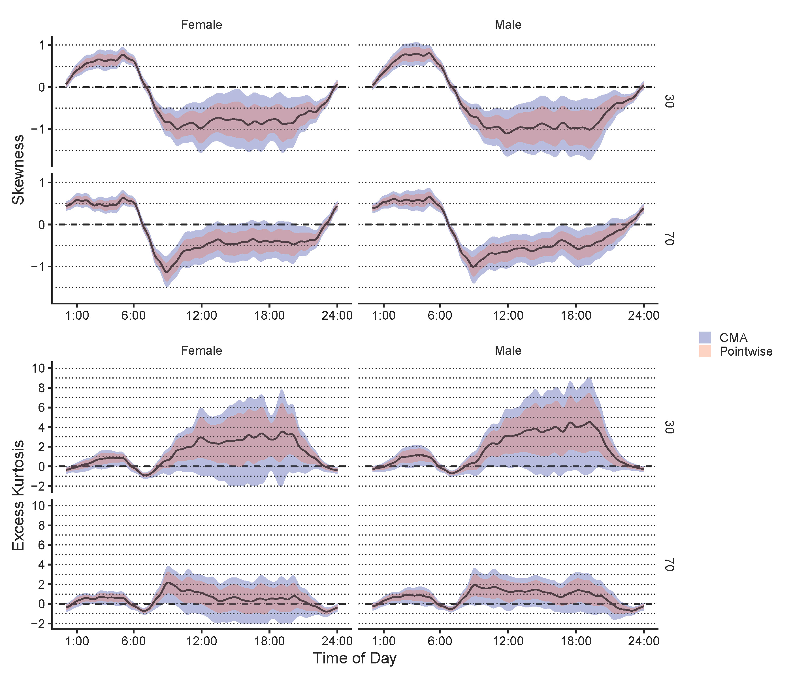
Takeaway: Older individuals’ movement is more Gaussian (less outliers/more symmetric)
We choose to model \(Var[\xi_{ij}]=E[\xi_{ij}^2]\) using log-linear model: \[ \log E[\xi_{ij}^2]=X_i'\beta_j \] and \(\mathrm{Cor}((\xi_{i1},\ldots,\xi_{iJ})')=C\), which is irrelevant of \(X\).
Now the covariance operator for \(Y_i(t)\) becomes \[ \tiny \begin{aligned} \Sigma_i(s_1,s_2)&=\sum\limits_{j_1=1}^J\sum\limits_{j_2=1}^J(e^{X_i'\boldsymbol{\beta}_{j_1}})^{1/2}(e^{X_i'\boldsymbol{\beta}_{j_2}})^{1/2}C_{j_1,j_2}\phi_{j_1}(s_1)\phi_{j_2}(s_2)\\ &+\sigma^2_\epsilon(s_1)\mathbb{I}(s_1=s_2) \end{aligned} \] - \(Y_i(t)|X_i\) can be correlated even if \(C\) is diagonal.
We can similarly model the skewness and kurtosis:
\[ \tiny \begin{aligned} Skew(\hat\xi_{ij})\approx E[\tilde{\xi_{ij}^*}^3]&=X_i'\delta_{\text{skew},j}\\ Kurt(\hat\xi_{ij})\approx E[\tilde{\xi_{ij}^*}^4-3]&=\exp(X_i'\delta_{\text{kurt},j})\\ (\tilde\xi_{ij}^*=\hat\xi_{ij}/SD(\hat\xi_{ij})\text{ is the }&\text{standardized score}) \end{aligned} \]
as well as cross-products like \(\xi_{i1}\xi_{i2}\xi_{i3}\), etc. (not shown here)
We develop a pragmatic way of estimating the parameters one-by-one. Interval estimates are calculated using bootstrap, both pointwise and multiplicity adjusted 1
1-1: For each time point \(s_j\), regress \(Y_i(s_j)\) on \(X_{ip}\) for a raw estimate \(\tilde A_p(s_j)\). Smooth2 \(\tilde A_p(s_1),\cdots,\tilde A_p(s_T)\) to get the final estimate of \(\hat A_p(s)\).
1-2: Extract \(1^{st}\)-step residual \(\small\hat r_i(s)=Y_i(s)-\sum\limits_{p}X_{ip}\hat A(s)\)
2-1: Regress residuals \(\small\hat r_i(s)=Y_i(s)-\sum\limits_{p}X_{ip}\hat A(s)\) on \(\small\phi_1(s),\cdots,\phi_J(s)\) with penalty to get score estimates \(\hat\xi_{ij}\). Record effective degrees of freedom \(edf_i\).
2-2: Perform GLM with log-linear model \[ \small {Var[\hat{\xi_{ij}}]\approx}E[\hat\xi_{ij}^2]=\exp(X_i'\beta_j);~~~ Var[\hat\xi_{ij}^2]\propto E[\hat\xi_{ij}^2] \]
2-3: Recover \(C\) from standardized scores \(\small\hat{\xi_{ij}^*}=\hat{\xi_{ij}}(\exp(X_i'\beta_j))^{-1/2}\).
2-4: Recover \(\small\sigma_\epsilon^2(s)\) via smoothing the squared-residual \([\hat r_i(s)-\sum_j\hat\xi_{ij}\phi_j(s)]^2\)
\[ \tiny \begin{aligned} Y_i(t)&={\sum\limits_{p=1}^PX_{ip}A_p(s)}+{\sum\limits_{j=1}^J\xi_{ij}\phi_j(s)}+{\epsilon_i(s)} \end{aligned} \]
2-5: Perform linear regression on: \[ \tiny \begin{aligned} Skew(\hat\xi_{ij})\approx E[\tilde{\xi_{ij}^*}^3]&=X_i'\delta_{\text{skew},j}\\ Kurt(\hat\xi_{ij})\approx E[\tilde{\xi_{ij}^*}^4-3]&=\exp(X_i'\delta_{\text{kurt},j}) \end{aligned} \] and other cross-products, such as \(\tilde{\xi_{i1}^*}^2\tilde{\xi_{i2}^*}\).1
2-6: Recover skewness/kurtosis of \(Y_i(s)|X_i\) using 2nd-4th moments of scores
Standard error estimated via nonparametric bootstrap, i.e. sample individuals w/ replacement
Pointwise Wald intervals: \(\pm 1.96\times SE\)
Correlation and Multiplicity Adjusted(CMA) interval1: \(\pm Q\times SE\)
Should we use symmetric CI when we no longer assume symmetry in the data?
\(\tiny Y_i(t)=\mathbf{\sum\limits_{p=1}^PX_{ip}{A_p(s)}}+{\sum\limits_{j=1}^J\xi_{ij}\phi_j(s)}+{\epsilon_i(s)}\)
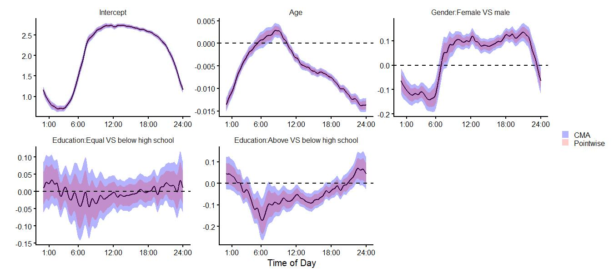
1 2
\[ \tiny \begin{aligned} Y_i(t)&={\sum\limits_{p=1}^PX_{ip}{A_p(s)}}+{\sum\limits_{j=1}^J\xi_{ij}\phi_j(s)}+\mathbf{\epsilon_i(s)} \end{aligned} \]
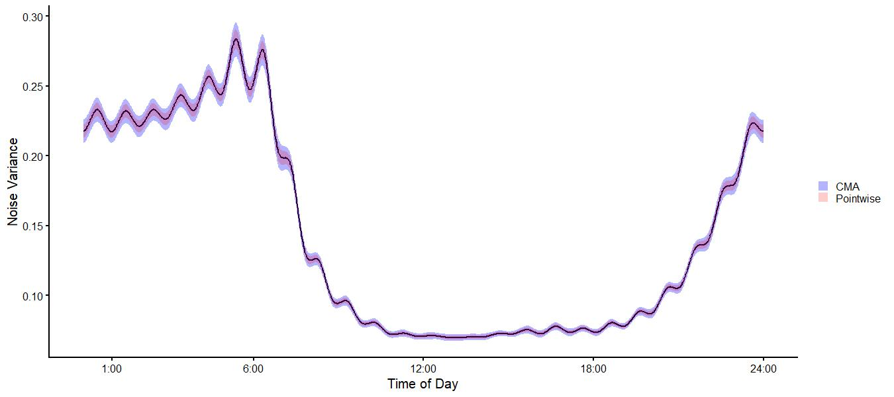
\(\tiny Y_i(t)={\sum\limits_{p=1}^PX_{ip}{A_p(s)}}+\mathbf{\sum\limits_{j=1}^J\xi_{ij}\phi_j(s)}+\mathbf{\epsilon_i(s)}\)
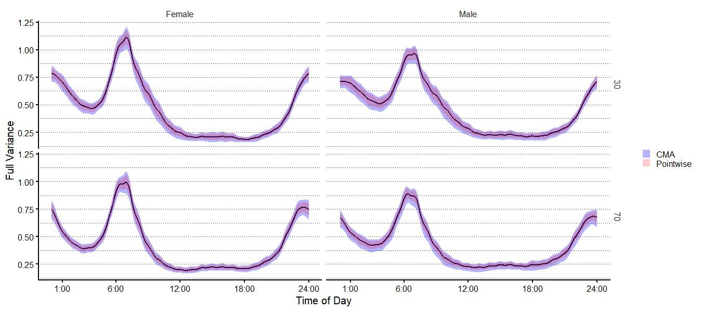
1
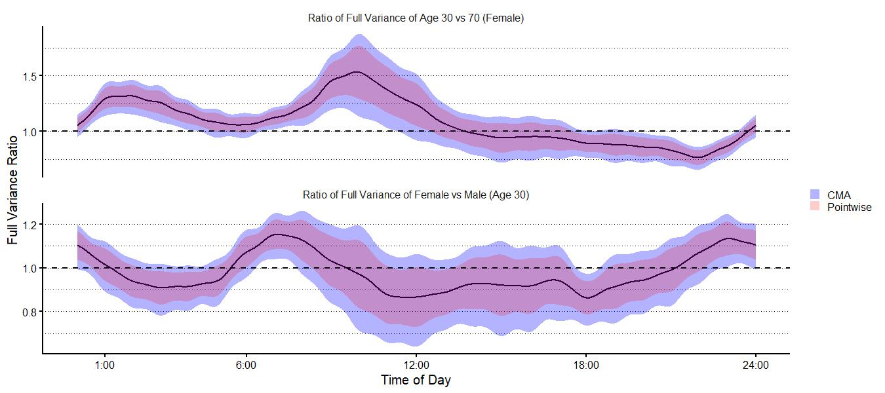
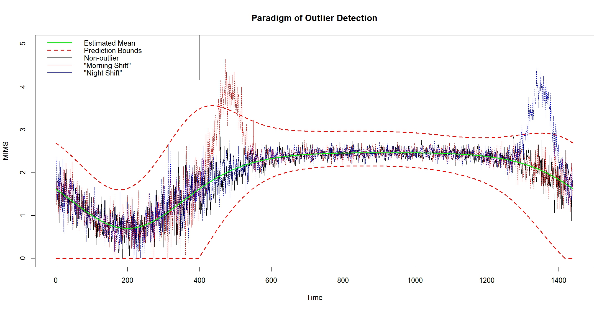
Cui, Erjia, Leroux, Andrew, Smirnova, Ekaterina and Crainiceanu, Ciprian M. (2021). Fast univariate inference for longitudinal functional models.
Crainiceanu, C.M., Goldsmith, J., Leroux, A. and Cui, E. (2024). Functional Data Analysis with R
Backenroth, Daniel, Goldsmith, Jeff, Harran, Michelle D., Cortes, Juan C., Krakauer, John W. and Kitago, Tomoko. (2018). Modeling motor learning using heteroscedastic functional principal components analysis
Cui, E., Leroux, A., Smirnova, E., & Crainiceanu, C. M. (2021). Fast Univariate Inference for Longitudinal Functional Models.
Reiss, Philip T., Huang, Lei and Mennes, Maarten. (2010). Fast function-on-scalar regression with penalized basis expansions.
Yi Zhao, Brian S Caffo, Xi Luo, For the Alzheimer’s Disease Neuroimaging Initiative, Longitudinal regression of covariance matrix outcomes